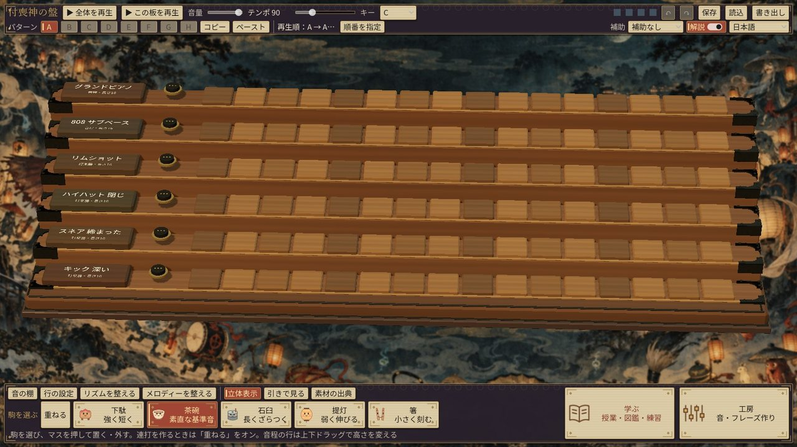
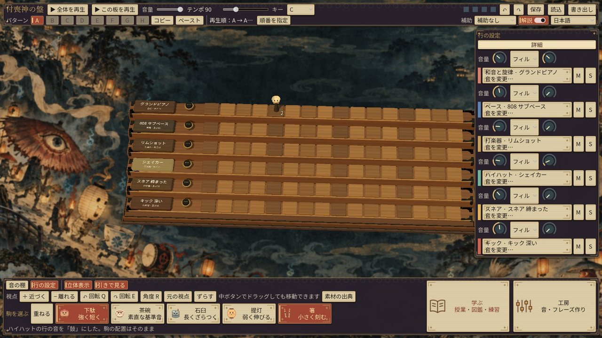

Put a piece down. It plays.

A board for building music, in development
Tsukumogami are the spirits that move into old household things. Here they are pieces: a geta sandal, a tea bowl, a millstone, a paper lantern, a pair of chopsticks. Put one on the 16 by 6 wooden board and it plays.
On the melody rows, pitch is how high a piece floats. Turn the board on its side and the tune is right there, a line drawn in the air.
- Place it and it playsNo manual needed. Music starts with the first piece.
- Make your own soundsRecord a sound or build a short phrase in the workshop, then give it to a row.
- Learn while you playThe same board teaches how rhythm and chords work.


New devlog episodes go up on YouTube on Tuesdays, Fridays and Sundays.
Watch the devlog on YouTubeTsukumogami Board
Haus Tacorari
In development